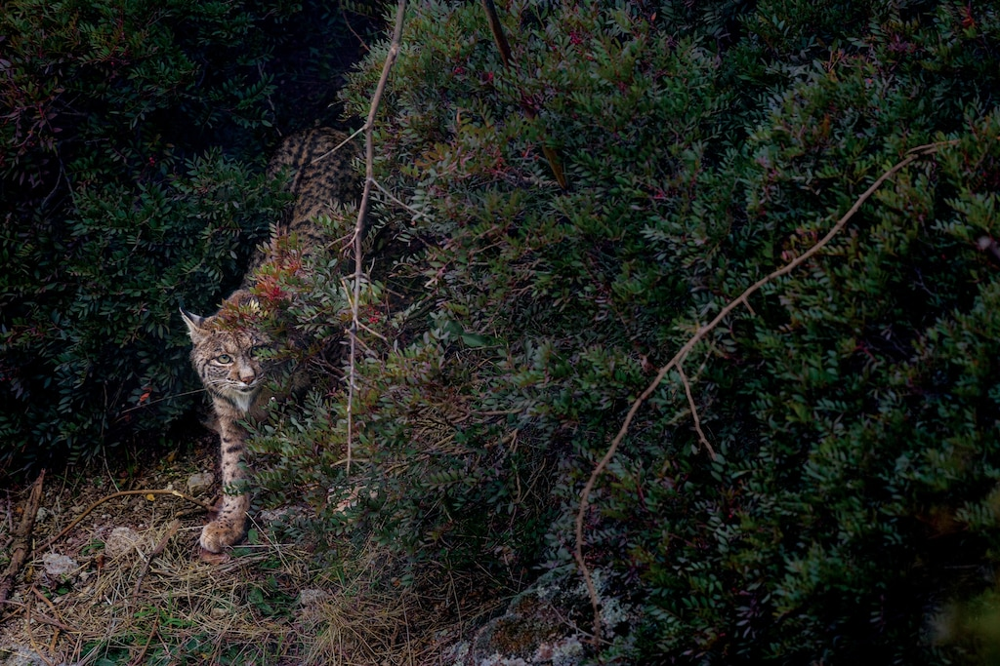

SCIENCE
New method delivers life-saving drigs to the brain-using sound...
READ

HISTORY MAGAZINE
The victorious origins of Cinco de Mayo
READ

SCIENCE
Fruits and vegetable are less nutritious than they used to be
READ
TODAY'S PICKS
ANIMALS

Vaquita porpoises may still recover if illegal fishing ends
MAGAZINE
PLANET POSSIBLE

4 eco-friendly ways to keep pests out of your yard
MAGAZINE
How this feline became the biggest comeback in cat conservation
HISTORY MAGAZINE

This American's Supreme Court fight defined U.S. citizenship
TRAVEL
WORLD HERITAGE

To see Soudi Arabia, start with this 'magical' gateway to Mecca
ENVIRONMENT

Forests as 'carbon offsets'? Climate change has other plans.